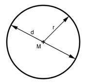

Aufgabe 22 A = 16 610 600 mm2. Wie groß ist der Radius r in mm?  A = π * r2 |:π A --- = r2 |√ π r = Aπ=16 610 600π r = 2 300 mm d = 2 * r = 2 * 2300 mm = 4 600 mm
Aufgabe 22 A = 16 610 600 mm2. Wie groß ist der Radius r in mm?
